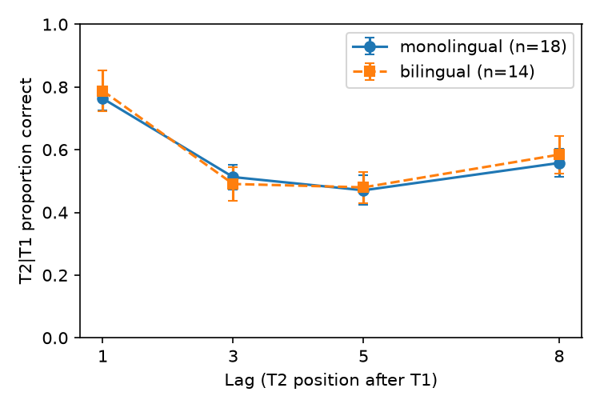

Question. When a second target (T2) follows a correctly identified first target (T1) in a rapid stream, do bilingual adults report T2 less often than monolinguals at short lags, most of all at lag 3 — i.e. is there a Group × Lag interaction on T2|T1 accuracy with the bilingual curve lower at short lags?
Data and sample. Replication data file d09.sav: per-participant T2|T1 proportion correct at lags 1, 3, 5, 8 (computed by the replication team from the trial files). Group is coded 1/2 without labels; it was mapped from the questionnaire (Q1, number of fluent languages: 1 for every Group-1 row, 2 for every Group-2 row), so 1 = monolingual, 2 = bilingual. N = 32 (18 monolingual, 14 bilingual); no exclusions, as the protocol specifies for this test. All 32 have complete data.
Test (fixed before analysis). Mixed-design ANOVA, Type III SS: Group (between) × Lag (within, 4 levels), DV = T2|T1. Primary statistic: Group × Lag interaction, Greenhouse-Geisser corrected (Mauchly W = 0.51, p = .002; ε = 0.776). Effect size: partial η² = SS_int / (SS_int + SS_error), 90% CI by noncentral-F inversion. The claim holds only if the interaction is significant (p < .05) with bilinguals lower at short lags.
Cell means (SD), T2|T1
| Lag | Monolingual (n = 18) | Bilingual (n = 14) | Mono − Bi |
|---|---|---|---|
| 1 | .763 (.162) | .788 (.242) | −.025 |
| 3 | .513 (.166) | .491 (.200) | +.022 |
| 5 | .471 (.200) | .480 (.187) | −.009 |
| 8 | .558 (.189) | .584 (.224) | −.026 |

Result. Group × Lag: F(2.33, 69.84) = 0.38, p = .717 (GG); partial η² = .012, 90% CI [.000, .055]. Uncorrected F(3, 90) = 0.38, p = .767. The two lag curves are nearly superimposed: both groups show a clear blink (Lag main effect F(3, 90) = 56.0, p < .001, partial η² = .65), but its depth does not differ by group. At lag 3 bilinguals are only .022 below monolinguals (Welch t = 0.33, p = .74; descriptive), and at lags 1, 5 and 8 bilinguals are slightly higher. Group main effect F(1, 30) = 0.02, p = .88.
Checks (not the basis of the conclusion).
- One bilingual (24145) has implausibly low T2|T1 (.02–.17) with normal T1 accuracy, suggesting a response or scoring anomaly. Without this participant: F(2.37, 68.72) = 0.63, p = .563, partial η² = .021.
- Protocol's exploratory analysis dropping the 4 bilinguals who began English after age 12 (n = 28): F(2.25, 58.45) = 0.16, p = .877, partial η² = .006.
- The partial η² was computed by hand and checked against pingouin's mixed_anova; the two agree. With a single between-subjects factor, the Type III and Type II sums of squares for the interaction are identical.
Limitations. The sample is small (14 bilinguals), so the 90% CI allows a small interaction (up to partial η² ≈ .055). The point estimate is near zero, though, and the pattern is not in the predicted direction. The raw E-Prime files (d01.zip) were not re-scored; the test uses the replication team's per-participant cells, as specified.
Conclusion. The claim does not hold on this data: bilinguals did not show a larger attentional blink than monolinguals (Group × Lag F(2.33, 69.84) = 0.38, p = .72, partial η² = .01).